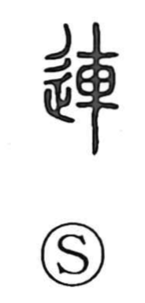

Explanation
連 combines 車 with 辵, movement. Here 車 represents a wooden carrying frame used to bear a load on the back, particularly when travelling through mountainous country. The original sense is carrying or transporting a burden.
The familiar meanings ‘join,’ ‘follow in sequence,’ and ‘continue’ come through interchange with 聯. That graph originally shows a cord joining the severed ears taken from defeated enemies, carried home as evidence of military achievement. Its connected objects supply the idea of a series.
連 took over this connectedness and became the ordinary character for things joined or occurring one after another. It can describe an unbroken succession, a group that belongs together, or people going along in company. These meanings entered through the related written use, alongside its original association with carrying.